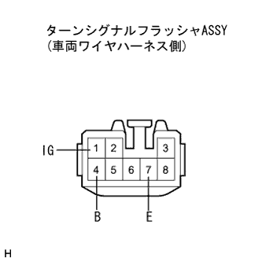
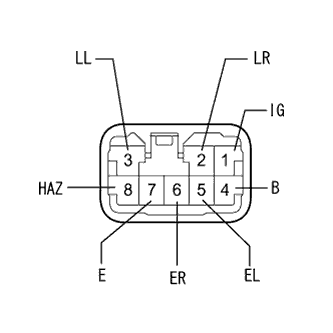

Turn Signal Flasher Assembly On-vehicle Inspection |
| 1. Inspect Turn Signal Flasher Assembly |
 |
Input/Output Operation Inspection
Disconnect the turn signal flasher assembly connector.
Using SST (Toyota electrical tester), measure the voltage between each terminal of the vehicle side wire harness connector and body ground.
| Tester Connection (Terminal Symbol) | Condition | Standard |
|---|---|---|
| 4 (B) - Body ground | Always | 11 to 14 V |
| 1 (IG) - Body ground | IG OFF → ON | Below 1 V → 11 to 14 V |
Using SST (Toyota electrical tester), measure the resistance between each terminal of the vehicle side wire harness connector and body ground.
| Tester Connection (Terminal Symbol) | Condition | Standard |
|---|---|---|
| 7 (E) - Body ground | Always | Below 1 Ω |
Connect the turn signal flasher assembly connector.
 |
Using SST (Toyota electrical tester), measure the voltage between each connector terminal and body ground.
| Tester Connection (Terminal Symbol) | Condition | Standard |
|---|---|---|
| 6 (ER) - Body ground | Turn signal switch (right) OFF → ON | 11 to 14V → Below 1 V |
| 5 (EL) - Body ground | Turn signal switch (left) OFF → ON | 11 to 14V → Below 1 V |
| 8 (HAZ) - Body ground | Hazard switch OFF → ON | 11 to 14V → Below 1 V |
| 2 (LR) - Body ground | Turn signal switch (right) OFF → ON | Below 1 V → Alternates between below 1 V and 11 to 14V at 60 - 120 times/min |
| 3 (LL) - Body ground | Turn signal switch (left) OFF → ON | Below 1 V → Alternates between below 1 V and 11 to 14V at 60 - 120 times/min |
| 2 (LR) - Body ground | Hazard switch OFF → ON | Below 1 V → Alternates between below 1 V and 11 to 14V at 60 - 120 times/min |
| 3 (LL) - Body ground | Hazard switch OFF → ON | Below 1 V → Alternates between below 1 V and 11 to 14V at 60 - 120 times/min |